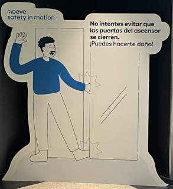

🧠 Gray Zones Workshop
Areas We Dedicate Little Gray Matter To
Where our mental energy doesn't go,
problems grow.
Interactive mapping • Real cases • Scientific foundations
Start →
What's a Gray Zone?
Gray zones = areas we dedicate little gray matter to.
But this is normal. Why?
Two working hypotheses:
1️⃣ Systems are imperfect by nature
2️⃣ We're designed to save mental energy
The Elevator Paradox →
🚨 The Elevator Paradox
Question: Do you think the elevators in this building are safe?
(Most people say "yes")

But then... If the automatic doors pass all industry inspections,
why do we see signs saying "Don't try to stop the doors with your hand"?
Over-reliance: We trust systems that "always work"—
until they don't.
Why This Matters →
🧩 Human Balance & System Trust
Humans lose balance with every step...
but we have faith we'll recover it in the next step.
Similarly, we navigate tolerance to uncertainty daily:
✓ Traffic lights will work
✓ Our laptop won't crash
✓ The person next to us knows what they're doing
Gray zones emerge where this necessary trust meets imperfect systems.
The Four Gray Zones →
The Four Gray Zone Areas
🌫️
Uncertainty
Areas we don't dare to look at. System boundaries, future evolution, department interactions.
🤝
Ownership
Areas we think are NOT our responsibility, but are close to our activity and influence it.
⚙️
Over-reliance
Things we take for granted. Systems that "always work." What we assume will never fail.
⏳
Constraints
Human limitations we don't normally account for: time, urgency, fatigue, distractions.
See Them in Action →
Exercise: Mapping Your Gray Zones
Think of a process in your daily work
For each area, ask yourself:
🌫️ Uncertainty: What areas don't I dare to look at? What system boundaries am I ignoring?
🤝 Ownership: What's close to my work but I think "it's not my job"? Who depends on it?
⚙️ Over-reliance: What do I take for granted? What "always works" but I've never questioned why?
⏳ Constraints: What human constraints do I ignore? Time pressure, fatigue, distractions?
Identify at least one gray zone in each area.
Go Deeper →
"Go Deeper": Second Layer Questions
For each gray zone you identified, ask:
🌫️ Uncertainty: What do I REALLY not know? What variable could change everything?
🤝 Ownership: Who pays if this goes wrong? Does the responsible person actually know?
⚙️ Over-reliance: If this system fails, what's my backup plan? What signs would warn me?
⏳ Constraints: Where am I trading quality for a deadline? What happens when I'm tired/stressed?
Multiple passes reveal deeper insights. Each layer changes the analysis angle.
Real Scenario →
⚡ Real Scenario: System Integration
Your team is implementing a new software system. Everything looks good in testing. Launch is tomorrow.
🌫️ Uncertainty: What integration points haven't we fully tested?
🤝 Ownership: What happens if the vendor's support isn't available?
⚙️ Over-reliance: We assume the network will handle the load...
⏳ Constraints: The team has been working overtime for weeks...
Which gray zone would you address first? Why?
Scientific Context →
🧠 The Science Behind Gray Zones
Cognitive Load Theory
Neuroscience
Our brain has limited attention resources. Under stress, we filter "non-essential" information—missing critical signals.
System Boundaries
Systems Theory
No system is perfectly defined. Interactions at boundaries are where most failures emerge.
Responsibility Diffusion
Social Psychology
When everyone is responsible, no one feels responsible. Ambiguity creates inaction.
Automation Bias
Behavioral Science
We over-rely on automated systems and under-monitor their performance, missing gradual degradation.
Integration with Other Methods →
How Gray Zones Integrates
STAMP + Gray Zones
Enhancement: Use STAMP for system structure, Gray Zones for quick blind spot identification.
FRAM + Gray Zones
Enhancement: FRAM maps variability, Gray Zones identifies what variations we're not monitoring.
Agile + Gray Zones
Enhancement: Add Gray Zone review to retrospectives. What are we not paying attention to?
Risk Management + Gray Zones
Enhancement: Traditional risk focuses on known risks. Gray Zones reveals what's not even on the radar.
What Makes It Unique? →
Why Gray Zones Works
🔸 Cognitive honesty: Accepts that we save mental energy—works with human nature, not against it.
🔸 System realism: Assumes imperfection—focuses on continuous attention, not one-time fixes.
🔸 Four intuitive areas: Easy to remember and apply in real-time decisions.
🔸 Multiple passes: "Go Deeper" reveals different angles without overwhelming complexity.
🔸 Integration ready: Enhances existing methods rather than replacing them.
Personal Challenge →
Your Gray Zone Challenge
This Week's Experiment
1. Pick one process you know well (work or personal).
2. Apply the four areas: What am I not paying attention to?
3. Choose ONE small action to address the biggest gray zone.
4. In your next important meeting, ask: "What are we not seeing here?"
Remember: Systems are imperfect, we save mental energy.
Gray zones are inevitable—but they don't have to be invisible.
Thank You →
Thank you! 🧠
Start mapping what you're not paying attention to.
Learn more at grayzonemapper.com
"Gray zones are areas we dedicate little gray matter to—
but they don't have to stay that way."